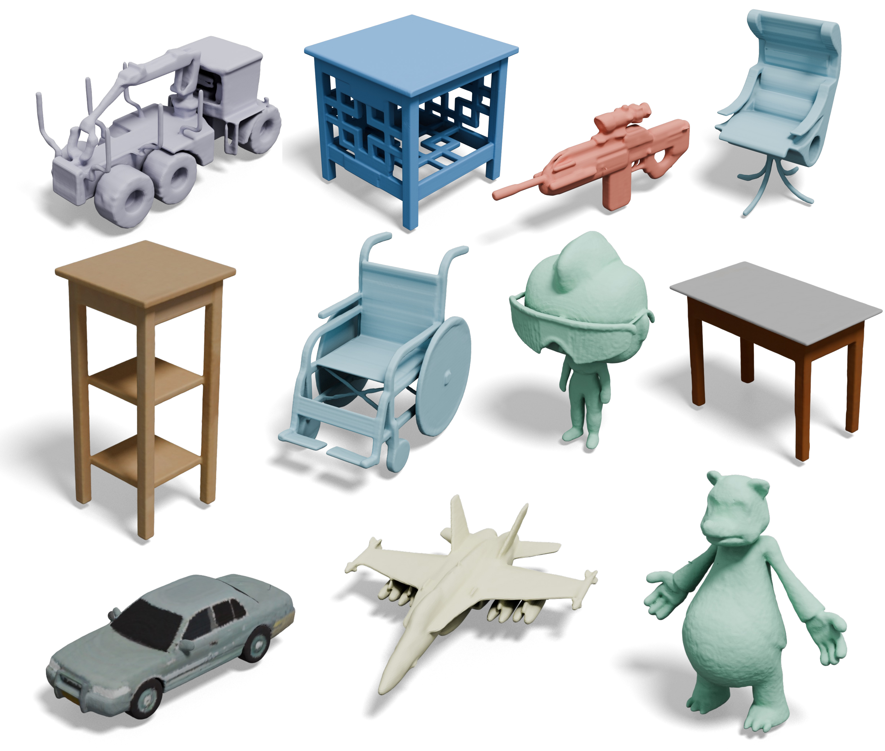
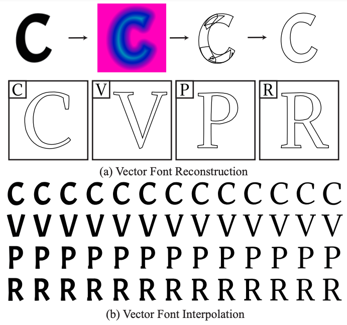

|
Bojun Xiong I am currently a master student at Peking University, under the supervision of Prof. Zhouhui Lian. I was also fortunate to be advised by Prof. Peng-Shuai Wang. I received my Bachelor's degree from the School of Electronics Engineering and Computer Science at Peking University in 2022. My research focuses on computer vision and computer graphics, particularly on generative AI models for 2D and 3D contents. |
{kind=link}
Publications (* denotes equal contribution) |

|
TexGaussian: Generating High-quality PBR Material via Octree-based 3D Gaussian Splatting
Bojun Xiong*, Jialun Liu*, Jiakui Hu, Chenming Wu, Jinbo Wu, Xing Liu, Chen Zhao, Errui Ding, Zhouhui Lian CVPR, 2025 project page / paper / code A 3D generative model trained on original 3D data from Objaverse, which is capable of generating high-quality PBR materials for input untextured 3D meshes. |
|
|
TexGarment: Consistent Garment UV Texture Generation via Efficient 3D Structure-Guided Diffusion Transformer
Jialun Liu, Jinbo Wu, Xiaobo Gao, JiaKui Hu, Bojun Xiong, Xing Liu, Chen Zhao, Hongbin Pei, Haocheng Feng, Yingying Li, Errui Ding, Jingdong Wang CVPR, 2025 project page / paper / code An efficient method which leverages a pre-trained text-to-image diffusion Transformer and introduces structural information to generate 3D-consistent garment textures. |
|

|
OctFusion: Octree-based Diffusion Models for 3D Shape Generation
Bojun Xiong*, Si-Tong Wei*, Xin-Yang Zheng, Yan-Pei Cao, Zhouhui Lian, Peng-Shuai Wang Computer Graphics Forum (SGP), 2025 project page / paper / code An octree-based diffusion model to generate high-quality and high resolution 3D shapes conditioned on text prompts, sketches, or category lables. |
|

|
VecFontSDF: Learning to Reconstruct and Synthesize High-quality Vector Fonts via Signed Distance Functions
Zeqing Xia*, Bojun Xiong*, Zhouhui Lian CVPR, 2023 project page / paper / code An end-to-end trainable model to reconstruct and synthesize high-quality vector fonts using signed distance functions (SDFs). |
Experiences |
|
Research intern at VIS, Baidu
Jun. 2024 - Dec. 2024
Research intern at Tencent AI Lab Aug. 2023 - May 2024 Master's Degree, Peking University, Beijing, China Sep. 2022 - Now Bachelor's Degree, Peking University, Beijing, China Sep. 2018 - Jul. 2022 |
Contact Me |
| Email: xiongbojun AT pku.edu.cn |
|
This page template is borrowed from ✩. |